Stellabelle Matic 欢迎来到 OpenSea 上的 Stellabelle Matic 之家。 发现这个系列中最好的项目。 NFT 世界中贪婪与平庸的致命结合催生了 CryptoStellas，这是由杰出的 OG 密码艺术家 Stellabelle 于
Stellar Leopards 欢迎来到 OpenSea 上的 Stellar Leopards 之家。 发现这个系列中最好的物品。Stellar Leopards 是一个实验性的 RPG 游戏项目。 10,000 个 Genesis NFT 遵循 ERC-721 标准，在以太坊上生成。 在地球丛林深
StellarAi Gen1 part 2 GEN1 Stellar AI 收集的 420 个 nfts 的第二部分，我们是这个宇宙的一部分；我们在这个宇宙中，但也许比这两个事实更重要的是，宇宙就在我们之中。”通过提供关键字和主
Stellas Community 这是一个社区可穿戴设备系列，这意味着任何人都可以在获得我的批准后铸造自己的加密体素可穿戴设备。 提交您的 vox 文件（必须为 32 x 32 x 32）后，请在 Twitter
StonerApeSketch StonerApeSketch 统计数据 创建于 4 个月前，270 代币供应，10% 费用 过去 7 天内没有出售 StonerApeSketch。 1717 年最流行的 NFT 收藏“StoneerAp
StonerCryptoClub Access Card StonerCryptoClub 访问卡统计 创建于 4 个月前，1 代币供应，5% 费用 过去 7 天内没有售出 StonerCryptoClub 访问卡。 我们即将推出的 StonerCryptoClub NFT 的终极 VIP 会员资格，拥有一张访问卡将授予您一个自
StonerDogz StonerDogz 统计数据 创建于 4 个月前，420 代币供应，10% 费用 过去 7 天没有出售 StonerDogz。 420 StonerDogz 🐕 在以太坊区块链上吸烟 没有不和谐，没有路线图，
Stoners Rock StonersRock 是在以太坊区块链上铸造的 10,420 个独特 NFT 的集合。 Rocks 让您可以进入我们独有的 Stoner Sanctuary，这是一个让志同道合的人放松、交流、探索和享受的地方
StonerTown Uhhhh.. 是 .. 7100 斯托纳？是的 7100 Stoners.. Blazin on the Blockchain.. 721a.. cc0.. Free.. MINTED OUT。想要一个呃..我太高了，无法写描述..它的嗯.. 7100 Stoners？是的，7100 个 Stoners 在区块链
Storied Apes Bananas 推出 5,000 个 Storied Apes Pixels NFT 合集。 Storyed Apes Pixel Collection 将在解锁Storied Apes 故事的下一阶段中发挥重要作用。 在 33%、66% 和 100% 铸造后向持有者赠送 $ETH。 NFT 在 33
Storied Apes Breeding Pass 使用后代猿繁殖通行证，加入传奇猿通往元宇宙的道路。当该系列推出时，每张通行证都将让您获得 1 个后代猿薄荷。 第4 阶段将引入Storied Apes Vox
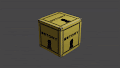 Storied Apes Loot Round 1 传奇猿战利品第一轮。1500个盒子会揭示什么宝物？ 3 月 31 日是战利品箱索赔的截止日期 - 这些现在是收藏家的独家物品▶ 什么是传奇猿战利品第1轮？ Storyed
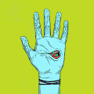 Strange Hands Official 我们想将我们公共服装利润的一部分赠送给持有者！我们将发布 Strange Hands Clothing 供公众购买 来自服装掉落的一定比例的利润将赠送给持有者您选择的手数越多（至少 30 天
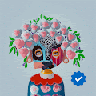 Strangers by Kojo Marfo Official Presale “我的艺术不是制作与真人相似的艺术品，而是专注于我的梦想和童年记忆中的人物，以便我可以创造脱离现实的人物。我以这种方式工作，不仅是为了尊重我
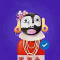 Strangers by Kojo Marfo Official Presale NFT “我的艺术不是制作与真人相似的艺术品，而是专注于我的梦想和童年记忆中的人物，以便我可以创造脱离现实的人物。我以这种方式工作，不仅是为了尊重我
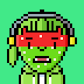 STRAWBERRY.WTF Strawberry.wtf 是 10,000 个独特的突变草莓 NFT。传说，每 420 年，草莓月亮就会升起，在以太坊区块链上召唤可验证的独特草莓憎恶！ 那不是全部！这些草莓可以访问 Strawberry.wtf 复古像
Street Stories By Omar 街头故事将包含独特的 1/1 滴。该集合由通过 Manifold Studio 的自定义智能合约提供支持什么是奥马尔的街头故事？ Street Stories By Omar 是一个 NFT（不可替代代币）系列。存储在区
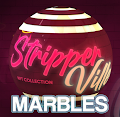 StripperVille Marbles StripperVille Marbles 是 3000 个 StripperVille 主题弹珠的集合，这些弹珠带有独特的实用程序，可让您进入直播的弹珠比赛，在那里您可以赢得 StripperVille 奖品，包括游戏内升级、$STRIP 硬币，
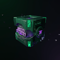 Sunmiya club - 30 Platinum Box 为 30 名 Miya 持有人准备 这是 Sunmiya Club 的第一个 30+ 白金盒子 NFT。 对于持有 30 多个 Sunmiya 俱乐部 NFT 的许多持有者来说， 娱乐文化等各种线上线下特权 它将定期空投。 合集 NFT
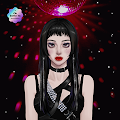 Sunmiya Club - Limited Vol.1(Oh Sorry Ya) Sunmiya Club - Limited Vol.1 (Oh sorry Ya) 这是宣美俱乐部为纪念宣美新歌《Oh Sorry Ya》发行而创作的NFT。新歌 Oh Sorry Ya 是针对女性艺术家和创作者的 Spotify 项目。 这首歌是宣美在《E
Sunmiya Club - Limited Vol.2(Fellowship) Sunmiya Club - Limited Vol.2 (Fellowship) 是为了纪念 Sunmiya Club 首部 OST 发行而制作的 NFT。 ‘Fellowship’是一首介绍歌曲，根据宣美进入元宇宙的&r
Sunmiya Club - Universe #1 [ Warp ] Warp NFT 是 Sunmiya 俱乐部世界观的开始，在 Warp 期间移动到星球时发布，在 Warp 期结束后，它转变为机械城 Teka、Hidden City Undercity 和 Outlaw Outlaw 的新星球 Miya。 Warp
Sunmiya Club OfficiaI 您被邀请到元界中的 K-POP 新文化，这是由宣米和 Fingerlabs 创造的世界。 Sunmiya Club是NFT（PFP）项目，是国内市场上女性艺术家的首次尝试。该项目将发行 10,000 个基
Sunmiya Club X Focus Caffeine - Focus BOX 【Sunmiya Club x Focus Caffeine联名产品发布NFT-Focus BOX】Sunmiya Club的Miya已成为TVCF及线下产品的“主力
Sunmiya Club X Metakongz(Veil) 提供给 15 名 Sunmiya 俱乐部持有者 这是 Sunmiya Club X Metakongz 限量合作 NFT Sunmiya Club X Metakongz(veil)。 该合集的 NFT 于 4 月 22 日发布， 通过 Sunmiya Club 官方网站上公开的新功能
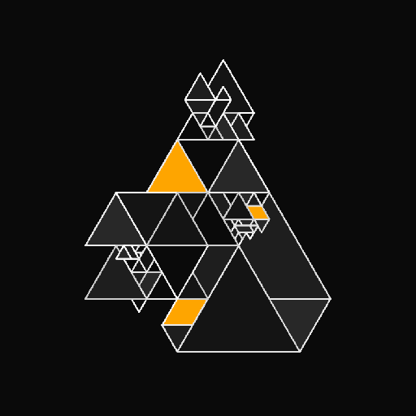 Sunpo by Shikakui Gallery Shikakui Gallery 是一家创新的 NFT 艺术工作室，融合了物理和数字艺术之间的界限以及您的体验方式。 我们正在通过画廊风格的模型在物理和数字艺术领域帮助招募和扩大艺
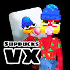 SupDucksVX 进入一个新维度！ SupDucks VX 于 2022 年 5 月 31 日推出。SupDucks VX 是您熟悉和喜爱的 OG SupDucks 的体素化再现。NFT stats 为您提供有关 NFT 空间的最新信息。 如果您想找
Super Doodz 欢迎来到 Super Doodz 2.0！ 如果您是 Doodz 公司的新手，那么 Opensea 上的 Daily Doodz 的原始和现有系列现在已经诞生了一个全新的系列 - Super Doodz！ 13,000 个从 ONE8 的插图中以编程方
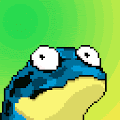 Super Frogs Super Frogs NFT 是生活在多边形区块链上的 4200 只随机生成的青蛙的收藏品集合。 加入我们的社区，参加大型活动和赠品！NFT stats 为您提供有关 NFT 空间的最新信息。 如果
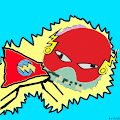 Super Kevins 一些凯文斯变异成了超级英雄！ 只有 333 名超级凯文斯经历了这种突变。 由 kevtoshi 带给您。 Super Kevins NFT - 常见问题（FAQ） ▶ 什么是超级凯文斯？ Super Kevins 是一个 NFT（非
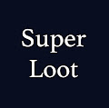 Super Loot (for Adventurers) 超级战利品是战利品的超集，具有更多部件（斗篷）、更多装备和表情符号🧬🔥💎🔮。 随意以任何你想要的方式使用 Super Loot。NFT stats 为您提供有关 NFT 空间
Super Rabbits NFT 集合具有独特的算法生成的 pfp，使用 140 多种手绘笔画。 这些可爱的兔子（有时）会陪伴你整个元节。NFT stats 为您提供有关 NFT 空间的最新信息。 如果您想
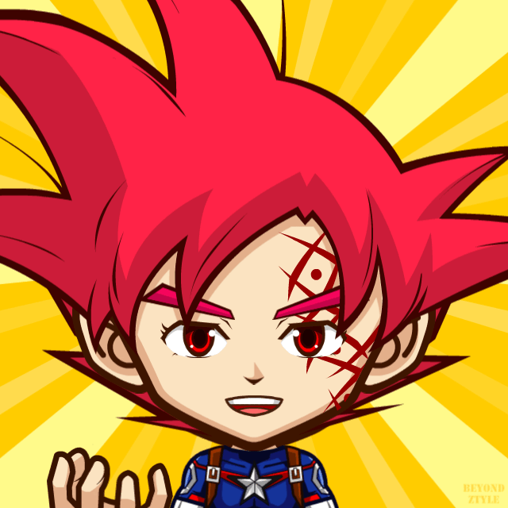 Super Saiyan Army (Dragon Ball Z) 超级赛亚人军队从收集 2,000 个独特的 NFT 开始。 该系列将收集来自龙珠 Z（日本动漫电视连续剧）的各种形式的超级赛亚人。 比如..超级赛亚人1、超级赛亚人2
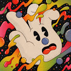 Super Scaredrops Scaredrops 向活跃的社区参与者空投的特殊作品。 Super Scaredrops NFT - 常见问题（FAQ） ▶ 什么是超级稻草人？ Super Scaredrops 是一个 NFT（不可替代令牌）集合。 存储在区块链上的数字
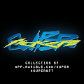 Super Tickets 超级门票是进入加密货币新时代的登机牌。NFT stats 为您提供有关 NFT 空间的最新信息。 如果您想找到最好的 NFT 购买、即将推出的 NFT 项目、最昂贵的 NFT 是什么——
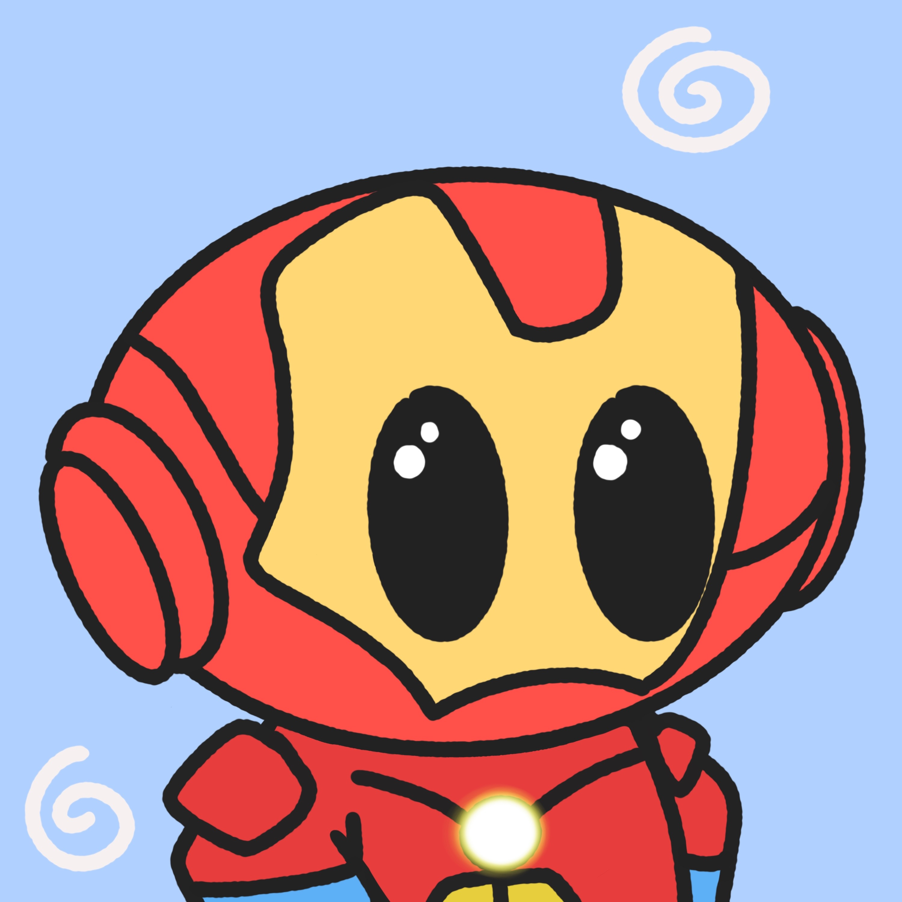 SuperBeaniez Beaniez 是由联合创始人 Olly & Greg 收集的 777 个可爱的 NFT，它们来自外太空，现在生活在以太坊区块链上。 Beaniez 不仅可爱，而且是对 web2 和 web3 空间中存在的项目的庆祝和重
SuperBest SuperBest NFT - 常见问题（FAQ） ▶ 什么是 SuperBest？ SuperBest 是一个 NFT（不可替代令牌）集合。 存储在区块链上的数字艺术品集合。 ▶ 有多少 SuperBest 代币？ 总共
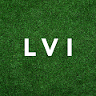 Superbowl LVI NFT Squares Football Squares NFT对于那些不知道如何玩这个经典而简单的游戏的人。 这是即将于 2022 年 2 月 13 日星期日下午 6:30 举行的超级碗 LVI 的足球盒池。 东部时间。 游戏内有100
SuperFarm Revv SuperFarm 很自豪地宣布，与 Animoca Brands 合作，SUPER 代币持有者将有机会获得这张独家代金券，以后可以兑换 SuperFarm 主题的 REVV 赛车 NFT。一个全球社区。了解有关 SuperFarm 的更多
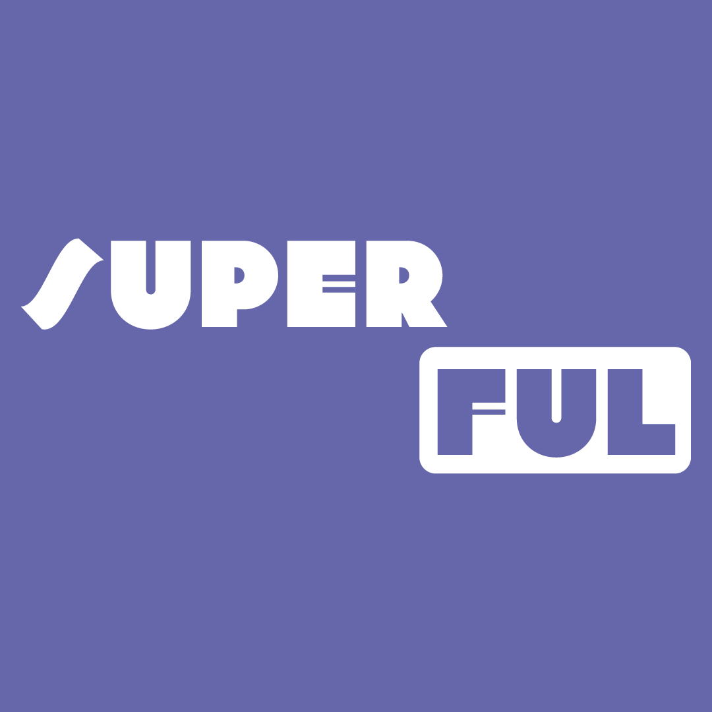 Superful - Superuser Genesis Pass 有限收集 1,337 个超级用户 Genesis Pass，持有者可以完全访问我们在 Superful 平台内构建的所有内容。NFT stats 为您提供有关 NFT 空间的最新信息。 如果您想找到最好的 NFT 购
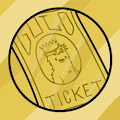 Superfuzz Gold Tickets 其中只有 200 个存在！ 10 预留赠品！ 这种稀有 NFT 的幸运拥有者将有权使用 Superfuzz 世界不断扩展的实用程序。 以下是发生的事情： 阿特拉斯实验室是一家专门从事克隆的
SuperGirl - Sophia 她很顽皮。 她很活泼。 她是 Sophia！欢迎来到我们的 SuperGirl 系列的第一个系列 - 一个基本上以女性为中心和事业驱动的系列。 6 个复活节彩蛋以 0.0017ETH 上市。 保证
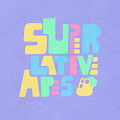 Superlative Apes Official V2 由 4,444 个衍生的 Superlative Apes NFT 组成的 Superlative Apes 集合 - Superlative Apes 是生活在 Polygon 区块链上的独特的数字和彩色收藏品。 注定给你幸福和温暖的感觉。 创建一个稳固而忠诚的社区，我们以


 是为纪念 Sunmiya Club 首部 OST 发行而制作的 NFT。")


。")